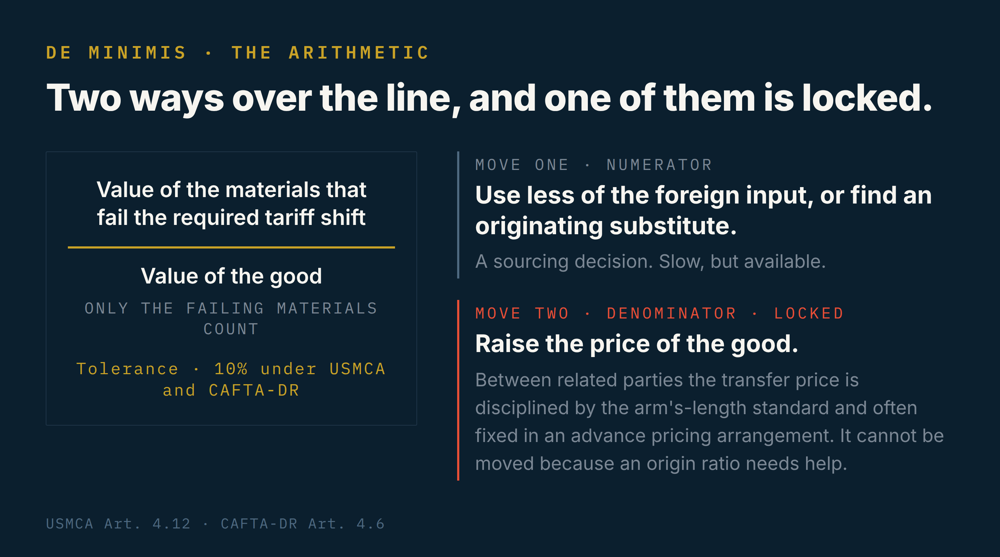

I always order vanilla. In Panama, in Managua, in Newport News, in a gelateria whose name I forget the moment I leave it, I look at the whole board of flavors and I ask for the plainest one. Friends find it funny. A man who has spent his career inside the machinery of international trade, standing in front of forty flavors, ordering the one that looks like nothing.
What they do not know is that vanilla is never the plainest thing on the board. It is, quietly, the most foreign. The milk in that scoop may have come from a farm an hour away. The sugar, from a mill in the same valley. But the vanilla, the actual bean, or the industrial vanillin standing in for it, almost never comes from the country where the ice cream was frozen. Every scoop I have ever ordered has been, without anyone at the counter knowing it, a small problem in the law of origin.
I learned to see it that way because of an ice cream that went to court.
A friend in Panama asked me once, years ago, about a door. He manufactured them. Good doors, solid, assembled in a workshop outside the city, and he could not understand why the paperwork would not simply call them Panamanian. He had built them in Panama. Where else would they be from? The answer is the part that takes people a while to accept. Where a thing is assembled is not, by itself, where the law says it is from. If the components arrive already made and you only join them together, or you take a finished product and put it in a new box, you have not created origin. You have moved it around. What the law looks for is transformation, the moment a set of inputs becomes something with a new name, a new character, a new use. Customs officers in the United States still argue it in those three words, name, character, use, a test older than most of the treaties we work under. A hinge, a panel, and a handle, screwed together, are still a hinge and a panel and a handle. The rule is strict on purpose. And because it is strict, it needs a valve.
Everything else, the labor, the freezing, the rest of the formula, was Central American. Between 2003 and 2004, a customs administration decided that the imported milk was enough to strip the ice cream of its origin and, with it, its free passage across a border it had been crossing for years. The exporter’s government disagreed, and the fight went to arbitration under the Central American dispute mechanism. It has a file number, MSC-04-04, and a company name that is now part of the public record, Productos Sarita. I read the whole file in 2008, cover to cover, the way you read something when you are young and do not yet know which cases matter. It taught me de minimis before I knew the phrase was fashionable.
The rule at the center of it, Article 11 of the Central American origin regulation, said something modest. A material that fails to make the required tariff jump can be ignored if it stays under seven percent of the value of the good. The milk failed the jump. The milk was under seven percent. The importing side had two answers. First, that once the milk became ice cream it had already changed classification, so de minimis was beside the point. Second, and more aggressively, that you should add up every non-originating material in the product, not only the milk, which pushed the number well past the threshold. The Council of Ministers had to step in and clarify, in Resolution 137-2005, what should have been plain from the text. You count only the materials that fail the required change, not the entire foreign content of the good. On June 13, 2006, the tribunal ruled. De minimis applied. The ice cream was originating. The measures blocking it were incompatible with the treaty, and the losing side had sixty days to withdraw them.
The part I have never forgotten is that it was not even a new idea in 2006. The tribunal leaned on an earlier, nearly identical case, a milk-based ice cream from Honduras that had already been declared originating on the same reasoning. The principle was settled before the fight even started. What Sarita really recorded was how hard people will work to unsettle a settled thing when a percentage point of somebody’s product is on the line.
What the valve will not open for
Here is what makes the case refuse to age. That seven percent in Article 11 was not a Central American peculiarity. It was NAFTA’s number too. When the United States, Mexico, and Canada rewrote NAFTA into the USMCA, they raised it to ten percent of the value of the good, in Article 4.12. CAFTA-DR carries its own de minimis, ten percent of the adjusted value, in Article 4.6. The European Union’s origin protocols run a tolerance rule in the same neighborhood. The threshold I learned by reading a dispute over Guatemalan ice cream is, give or take a few points, the threshold that governs a container arriving in Long Beach this afternoon.
But the valve has always had things it will not open for. The de minimis lists, from NAFTA forward, have long carved out the categories where a small foreign input is not forgiven. Dairy, for goods of Chapter 4. Certain sugars, Chapter 17, the tariff lines that cover cane and beet sugar. And, in a detail I find almost too perfect, coffee, the green bean going into instant coffee. Look at what those exclusions have in common. Dairy, sugar, coffee. They are exactly the products this region lives and dies by, and they are precisely the ones the modern agreements refuse to let slip through the window. The valve is generous with a screw or a resistor, and it closes hard on the things a producing country is expected to actually produce.
Automobiles are a different animal. The de minimis is technically there, but it barely helps, because a passenger vehicle has to clear a regional value content of seventy-five percent, a labor value content calculated by wage, and a requirement that most of its steel and aluminum be North American. A ten percent window does not rescue a car from arithmetic like that. And that entire regime is, as I write this in 2026, sitting on the table of the USMCA joint review, being argued over again. A principle a Central American tribunal applied to a tub of ice cream in 2006 is, twenty years later, the thing trade ministers are negotiating over cars.
Which brings me back to the scoop in my hand.
When I order vanilla in Managua, the dairy is probably Nicaraguan. Under the rules we just walked through, the dairy is the part that would never have been the problem. It is the vanilla that came from somewhere else, from Madagascar most likely, or from a factory that synthesized the flavor out of something that began as wood pulp. The one ingredient the dessert is named after is the one ingredient that did not grow anywhere near it. If that vanilla is a large enough share of the value and it fails its tariff shift, the whole sweet, simple, local-tasting thing has an origin question sitting inside it. I have eaten that question in four countries. It always tastes the same. That is the joke the counter never gets.
Origin is built months before the border
None of this gets decided at the border. That is the thing people outside the discipline never quite believe. Origin is not discovered by an officer opening a container. It is built, or lost, months earlier, in a spreadsheet, in a purchasing decision, in a recipe nobody thought to run past compliance.
I once worked with an exporter whose portfolio leaned on de minimis for two of its products. Every month, I sat with the manufacturing side and re-ran the costing, because de minimis is a calculation of value, and value moves. A supplier raises a price. A currency slips. Suddenly the foreign input that was comfortably under the threshold in March is brushing against it in June, and nobody on the plant floor has any reason to notice. My job was to notice. It meant explaining to people in costing, to finance, to the general manager, to the buyers, that the recipe was not only a recipe. That the amount of a particular imported material was not a free variable they could optimize away. That procurement could not swap a local fat for a cheaper foreign one without asking me first whether that fat was originating, because the swap that saves four cents a kilo can quietly cost the client its tariff preference on the entire shipment.
A good compliance function runs its own import statistics, too, and reads them like weather. If a raw material starts arriving in volume for the plant and it is not something I was tracking, that is not a curiosity, that is a question I need to walk over and ask. What changed. Who approved it. Does it touch a product whose origin I certify. The people who keep this quiet, thinking a new formula is a trade secret to be guarded even from their own compliance team, are the ones who find out the hard way. Because the border does eventually ask. Under CAFTA-DR, under USMCA, the importing customs can verify origin after the fact, go to the producer, go to the records, and if the math does not hold, the preference is denied, retroactively, and the importer, your client, pays the duties it did not budget for and the penalties on top. The stupidity, when it surfaces, never lands on the person who changed the recipe. It lands on the customer.
There is a smaller confusion that does just as much damage, and it lives on the label.
Marketing loves the word origin without respecting it. “100% Nicaraguan beans.” “Made in Mexico.” “Product of Panama.” These sound like the same claim. They are three different legal tests, and they do not always agree. A product can qualify as originating under a trade agreement while carrying a foreign component that sits inside the de minimis window, which means it is legally originating and, at the same time, not one hundred percent anything. Print “100%” on that package and you have written something the shipment cannot support. The health registry makes it worse, because people treat it as a passport. A sanitary registration in Mexico tells you the product may be sold in Mexico. It says nothing about whether the product is Mexican in the eyes of customs. Regulatory domicile is not origin. I have watched commercial teams design a claim that felt true, that even was true in the marketing sense, and set off exactly the mismatch a customs officer is trained to see, the label naming one country while the declaration and the bill of materials tell a longer story. When those two documents disagree, someone eventually reads both.
And then there is the price, which is where the whole thing can become a trap with no visible exit.
Remember that de minimis is a fraction. Non-originating value on top, total value of the good on the bottom. When a product drifts over the line, there are only two moves. Bring down the numerator, by using less of the foreign input or finding an originating substitute, or lift the denominator, by raising the price of the good so the same foreign value becomes a smaller share of it. The second move looks easy on a whiteboard. It is often impossible in practice, and the reason is transfer pricing. When you sell to a related company, a subsidiary, an affiliate, a franchise under the same corporate roof, the price is not yours to set on a Tuesday because compliance needs a better ratio. It is fixed by an intercompany agreement, disciplined by the arm’s-length standard that tax authorities enforce, sometimes locked into an advance pricing arrangement. Somebody in the group runs an efficiency, changes an input to save money, the input turns out to fail origin, and the only arithmetic cure is a price you are not legally allowed to move. Two bodies of law, customs and tax, reaching for the same number and pulling it in opposite directions. Very few people in an organization can see both hands at once. That is the seat trade compliance is supposed to occupy, and the reason it cannot be an afterthought bolted onto logistics.

The question nobody has answered
It would be easy to think of all this as small. Regional cases, factory spreadsheets, a milk powder line item. It is not small, and the clearest proof is how high the same argument travels.
Sarita was settled in a regional tribunal. But the question underneath it, whether a country’s origin rules are a neutral measurement or a quiet instrument of protection, has been fought at the World Trade Organization itself. In DS243, India took the United States to a panel over the rules of origin Washington applied to textiles and apparel, arguing that the rules had been engineered to favor certain outcomes rather than to measure anything real. India invoked Article 2 of the WTO Agreement on Rules of Origin, the provision that says origin rules must not themselves become trade barriers, must be administered consistently, must not distort trade. The panel confirmed that origin rules answer to that discipline, though it found India had not proven the United States breached it. India did not appeal, and the dispute body adopted the report on July 21, 2003.
The deeper fact is the one that should unsettle anyone who thinks origin is a solved problem. The same WTO agreement launched a program to harmonize the non-preferential rules of origin, to give the world a single answer to the question of where a thing is from when no trade agreement is in play. It was meant to take three years. It is now past thirty, and it is not finished. The most elementary question in all of trade, where is this from, is the one on which the trading nations of the world have never managed to agree. Absent a treaty telling you which specific rule applies, you fall back to each country’s own non-preferential rules, and they do not match. The same shipment can be from one country in one port and from somewhere else in another.
I will keep ordering vanilla. It is a small loyalty, and I am aware of what it hides. The scoop looks like the simplest thing in the case, one country’s dessert, one flavor, one color, and it is instead a little assembly of decisions, most of them made far from the counter, about milk and sugar and a bean that traveled further than I will today. De minimis is the law’s quiet admission that this is how everything is actually made. That no country holds every input for anything worth manufacturing, that there is always the piece you cannot source at home, and that letting a small measure of the foreign in does not erase the work that was done locally around it. The window is not a loophole but an honesty written into the rule, about how production really happens.
That is what an ice cream taught me, in a file I read almost twenty years ago and have never fully put down. I think about the milk. I think about the 2.78 percent. And then the vanilla melts, and I order another, in whatever city I happen to be standing in, and it tastes exactly the same.